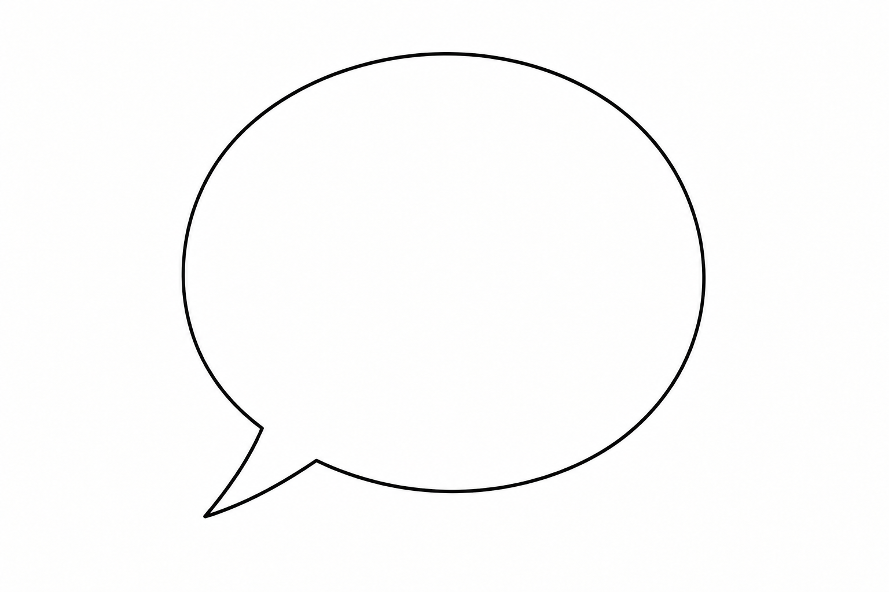

Talking ZEN

Talks
"If you shut your throat, mouth, and lips how will you speak?" — Case 70 Blue Cliff Record.
On Soundcloud: Denkai Talk A traditional talk thanking teachers and describing influences on our practice when someone becomes a teacher.
Books

Everyday Zen: Love & Work, Charlotte Joko Beck
Nothing Special: Living Zen, Charlotte Joko Beck and Steve Smith
Ordinary Wonder, Charlotte Joko Beck and edited by Brenda Beck Hess
Waking Up to What You Do: A Zen Practice for Meeting Every Situation with Intelligence and Compassion, Diane Eshin Rizzetto
Everything is the Way, Elihu Genmyo Smith
Ordinary Mind: Exploring the Common Ground of Zen and Psychology, Barry Magid
Ending the Pursuit of Happiness, Barry Magid
Nothing is Hidden: The Psychology of Zen Koans, Barry Magid
The Blue Cliff Record, translated by Thomas Cleary & J.C. Cleary
Entangling Vines: A Classic Collection of Zen Koans, translated by Thomas Yuho Kirchner
The Record of Empty Hall, compiled by Xutang Zhiyu, translation and commentaries by Dosho Port
Red Thread Zen: humanly entangled in emptiness, Susan Murphy